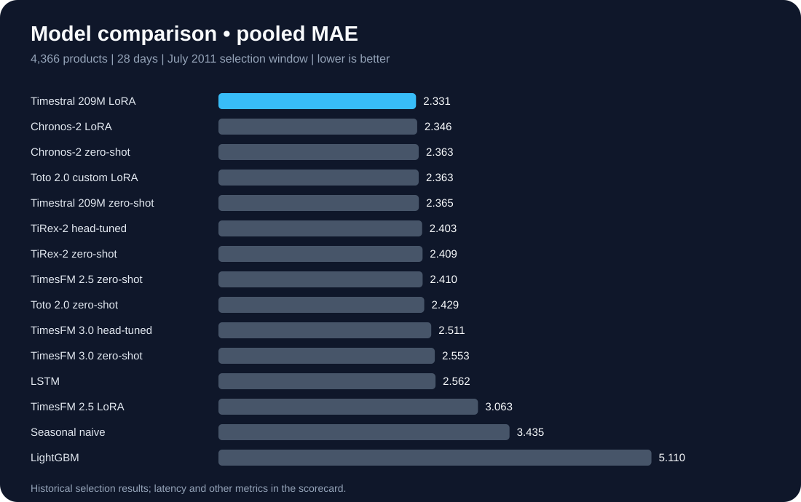

RetailMind AI / Project guide
Model evaluation
Compare every candidate on the same product and date keys, then inspect accuracy and recorded inference time.

Open interactive comparison dashboard →
Protocol
4,366 products, 28 days, and 122,248 product-day predictions per model. Training through April 2011; May checkpoint validation; July 2011 model-selection window. Forecasts were frozen before labels were scored.
Results
Timestral 209M LoRA led pooled MAE at 2.331; Chronos-2 LoRA followed at 2.346. TimesFM 2.5 LoRA had the lowest RMSE at 18.971. July is a selection window, not an untouched final test.
Reproduce
See scripts/foundation_models/prepare_validation_cohort.py, the model runners, and score_validation_comparison.py. Raw data and large forecast artifacts are excluded from Git; follow data/README.md and docs/validation-comparison.md.
Limitations
Latency varies by batch size and execution path. The packaged adapter is from the earlier validation run; the exact October checkpoint was not retained. Historical recorded sales may understate demand during stockouts.